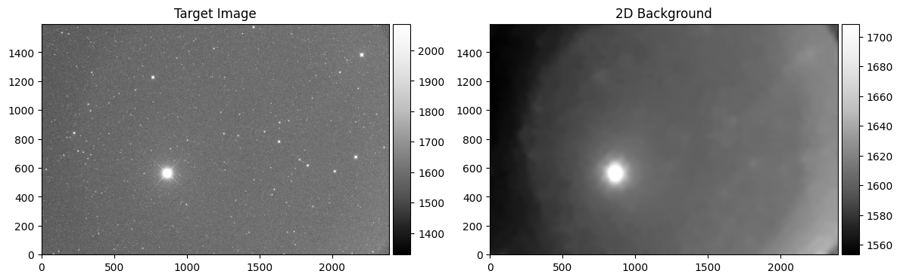
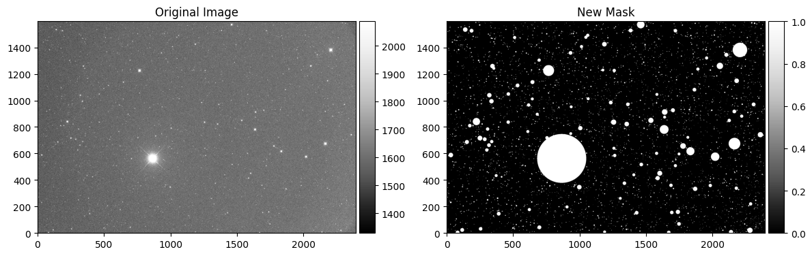
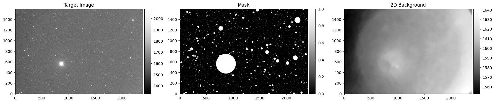
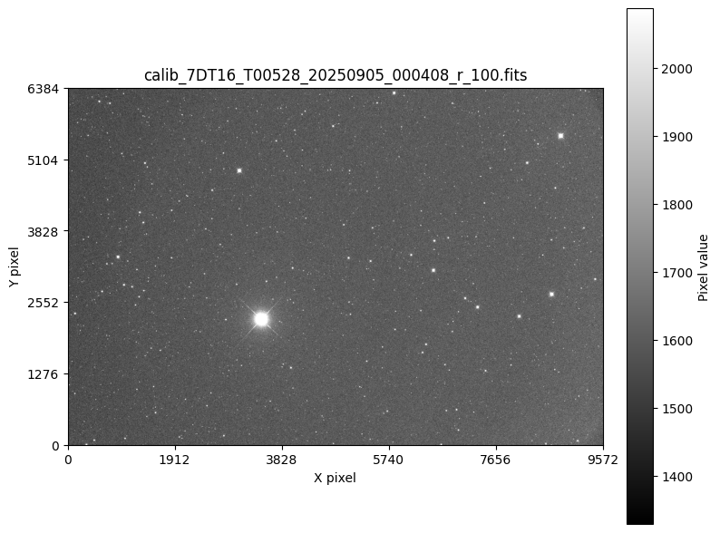
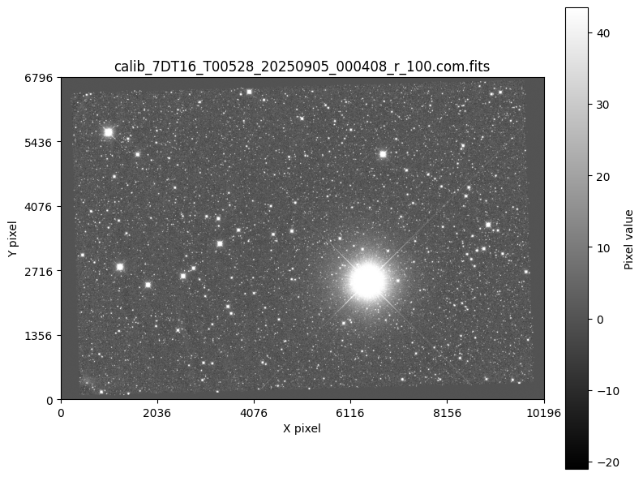
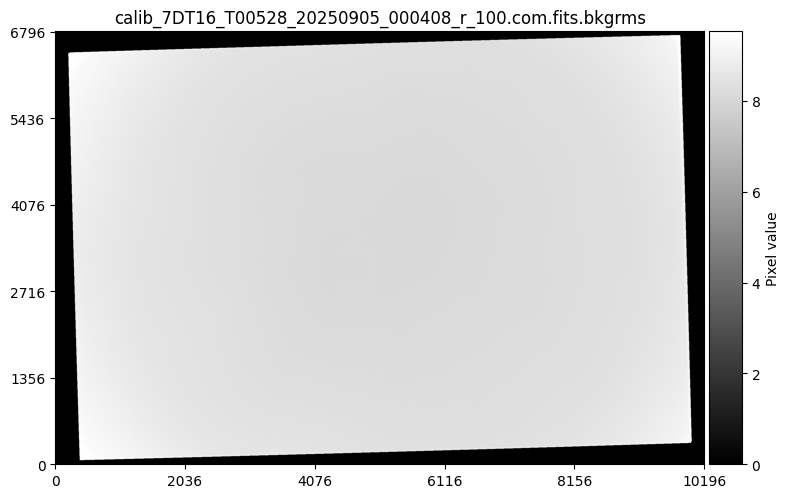

Stacking
This notebook demonstrates how to perform image stacking using the EZPhot package. Image stacking is a fundamental technique in astronomical image processing that combines multiple exposures to improve signal-to-noise ratio and reduce noise.
1. Load Data
Use the
DataBrowserclass to query and filter imagesLoad science images for processing
💡 Optional Tip: The
SDTDataQuerierclass provides methods to sync data from a central database to your local workspace, making it easy to work with large astronomical datasets.
🔍 1.1. Sync the data with SDTDataQuerier (Optional)
[1]:
# If you connected the database, you can easily sync the data from the database.
from ezphot.utils import SDTDataQuerier
sdtquery = SDTDataQuerier()
sdtquery.help()
target_name = 'T00528'
Help for SDTDataQuerier
Public methods:
- show_obsdestdata(foldername: str, show_only_numbers: bool = False, pattern: str = '*.fits')
- show_obsdestfolder(folder_key: str = '*')
- show_obssourcedata(foldername: str, show_only_numbers: bool = False, pattern: str = '*.fits')
- show_obssourcefolder(folder_key: str = '*')
- show_scidestdata(targetname: str, show_only_numbers: bool = False, key: str = 'filter', pattern: str = '*.fits')
- show_scisourcedata(targetname: str, show_only_numbers: bool = False, key: str = 'filter', file_pattern: str = '*.fits')
- show_scisourcefolder(folder_key: str = '*')
- sync_obsdata(foldername: str, file_pattern: str = '*.fits', ignore_exists: bool = True)
- sync_scidata(targetname: str, file_pattern: str = '*.fits', ignore_exists: bool = True)
[2]:
# sync_scidata method will run multiple rsync between Science Source directory and destination directory.
print('Source directory:', sdtquery.helper.config['SDTDATA_SCISOURCEDIR'])
print('Target directory:', sdtquery.helper.config['SDTDATA_SCIDESTDIR'])
sdtquery.sync_scidata(
targetname = target_name,
file_pattern = '*.fits',
ignore_exists = True
)
Source directory: /home/hhchoi1022/ezphot/data/connecteddata/7DT/processed_1x1_gain2750
Target directory: /home/hhchoi1022/ezphot/data/scidata/7DT/7DT_C361K_HIGH_1x1
Running:Running:Running:Running:Running:Running:Running:Running:Running:Running:Running:Running: rsync -av --info=progress2 --no-inc-recursive --prune-empty-dirs --ignore-existing --include */ --include *.fits --exclude * /home/hhchoi1022/ezphot/data/connecteddata/7DT/processed_1x1_gain2750/T00528/7DT10/ /home/hhchoi1022/ezphot/data/scidata/7DT/7DT_C361K_HIGH_1x1/T00528/7DT10/ rsync -av --info=progress2 --no-inc-recursive --prune-empty-dirs --ignore-existing --include */ --include *.fits --exclude * /home/hhchoi1022/ezphot/data/connecteddata/7DT/processed_1x1_gain2750/T00528/7DT06/ /home/hhchoi1022/ezphot/data/scidata/7DT/7DT_C361K_HIGH_1x1/T00528/7DT06/ rsync -av --info=progress2 --no-inc-recursive --prune-empty-dirs --ignore-existing --include */ --include *.fits --exclude * /home/hhchoi1022/ezphot/data/connecteddata/7DT/processed_1x1_gain2750/T00528/7DT07/ /home/hhchoi1022/ezphot/data/scidata/7DT/7DT_C361K_HIGH_1x1/T00528/7DT07/rsync -av --info=progress2 --no-inc-recursive --prune-empty-dirs --ignore-existing --include */ --include *.fits --exclude * /home/hhchoi1022/ezphot/data/connecteddata/7DT/processed_1x1_gain2750/T00528/7DT11/ /home/hhchoi1022/ezphot/data/scidata/7DT/7DT_C361K_HIGH_1x1/T00528/7DT11/rsync -av --info=progress2 --no-inc-recursive --prune-empty-dirs --ignore-existing --include */ --include *.fits --exclude * /home/hhchoi1022/ezphot/data/connecteddata/7DT/processed_1x1_gain2750/T00528/7DT15/ /home/hhchoi1022/ezphot/data/scidata/7DT/7DT_C361K_HIGH_1x1/T00528/7DT15/rsync -av --info=progress2 --no-inc-recursive --prune-empty-dirs --ignore-existing --include */ --include *.fits --exclude * /home/hhchoi1022/ezphot/data/connecteddata/7DT/processed_1x1_gain2750/T00528/7DT01/ /home/hhchoi1022/ezphot/data/scidata/7DT/7DT_C361K_HIGH_1x1/T00528/7DT01/rsync -av --info=progress2 --no-inc-recursive --prune-empty-dirs --ignore-existing --include */ --include *.fits --exclude * /home/hhchoi1022/ezphot/data/connecteddata/7DT/processed_1x1_gain2750/T00528/7DT14/ /home/hhchoi1022/ezphot/data/scidata/7DT/7DT_C361K_HIGH_1x1/T00528/7DT14/rsync -av --info=progress2 --no-inc-recursive --prune-empty-dirs --ignore-existing --include */ --include *.fits --exclude * /home/hhchoi1022/ezphot/data/connecteddata/7DT/processed_1x1_gain2750/T00528/7DT12/ /home/hhchoi1022/ezphot/data/scidata/7DT/7DT_C361K_HIGH_1x1/T00528/7DT12/
rsync -av --info=progress2 --no-inc-recursive --prune-empty-dirs --ignore-existing --include */ --include *.fits --exclude * /home/hhchoi1022/ezphot/data/connecteddata/7DT/processed_1x1_gain2750/T00528/7DT16/ /home/hhchoi1022/ezphot/data/scidata/7DT/7DT_C361K_HIGH_1x1/T00528/7DT16/rsync -av --info=progress2 --no-inc-recursive --prune-empty-dirs --ignore-existing --include */ --include *.fits --exclude * /home/hhchoi1022/ezphot/data/connecteddata/7DT/processed_1x1_gain2750/T00528/7DT08/ /home/hhchoi1022/ezphot/data/scidata/7DT/7DT_C361K_HIGH_1x1/T00528/7DT08/rsync -av --info=progress2 --no-inc-recursive --prune-empty-dirs --ignore-existing --include */ --include *.fits --exclude * /home/hhchoi1022/ezphot/data/connecteddata/7DT/processed_1x1_gain2750/T00528/7DT13/ /home/hhchoi1022/ezphot/data/scidata/7DT/7DT_C361K_HIGH_1x1/T00528/7DT13/
rsync -av --info=progress2 --no-inc-recursive --prune-empty-dirs --ignore-existing --include */ --include *.fits --exclude * /home/hhchoi1022/ezphot/data/connecteddata/7DT/processed_1x1_gain2750/T00528/7DT03/ /home/hhchoi1022/ezphot/data/scidata/7DT/7DT_C361K_HIGH_1x1/T00528/7DT03/
building file list ... building file list ... building file list ... building file list ... building file list ... building file list ... building file list ... building file list ... building file list ... building file list ... building file list ... building file list ... done
done
done
done
done
done
done
done
done
done
done
done
0 0% 0.00kB/s 0:00:00 (xfr#0, to-chk=0/211)
sent 8,342 bytes received 12 bytes 5,569.33 bytes/sec
total size is 49,041,109,440 speedup is 5,870,374.60
sent 8,312 bytes received 12 bytes 5,549.33 bytes/sec
total size is 49,041,135,360 speedup is 5,891,534.76
sent 8,325 bytes received 12 bytes 5,558.00 bytes/sec
total size is 49,041,123,840 speedup is 5,882,346.63
sent 8,058 bytes received 12 bytes 5,380.00 bytes/sec
total size is 49,041,129,600 speedup is 6,076,967.73
sent 8,352 bytes received 12 bytes 5,576.00 bytes/sec
total size is 49,041,132,480 speedup is 5,863,358.74
sent 8,297 bytes received 12 bytes 5,539.33 bytes/sec
total size is 49,041,132,480 speedup is 5,902,170.23
sent 8,351 bytes received 12 bytes 5,575.33 bytes/sec
total size is 48,796,430,400 speedup is 5,834,799.76
sent 8,388 bytes received 12 bytes 5,600.00 bytes/sec
total size is 49,041,135,360 speedup is 5,838,230.40
sent 8,365 bytes received 12 bytes 5,584.67 bytes/sec
total size is 49,041,109,440 speedup is 5,854,256.83
sent 8,350 bytes received 12 bytes 5,574.67 bytes/sec
total size is 49,041,129,600 speedup is 5,864,760.77
0 0% 0.00kB/s 0:00:00 (xfr#0, to-chk=0/111)r/
0 0% 0.00kB/s 0:00:00 (xfr#0, to-chk=0/211)
sent 4,069 bytes received 12 bytes 1,632.40 bytes/sec
total size is 25,613,104,320 speedup is 6,276,183.37
sent 7,763 bytes received 19 bytes 3,112.80 bytes/sec
total size is 49,041,135,360 speedup is 6,301,867.82
🔄 Sync Progress: The rsync process copies FITS files from the source directory to your local destination directory.
🔍 1.2. Query Data with DataBrowser
The DataBrowser class allows us to query and filter our synced data. Here we’ll explore the available keys and their values to understand what data we have access to.
[3]:
# Then, you can query your data with DataBrowser class.
# Since the data is copied to your private directory (['SCIDATA_SCIDESTDIR'](e.g. ~/ezphot/data/scidata by default) in configuration), you can use it as your own data.
# You can also use it as a context for ezphot.
from ezphot.utils import DataBrowser
dbrowser = DataBrowser('scidata')
# You can query the data with the below keys.
for key, value in dbrowser.keys.items():
print(key, value)
observatory {'7DT'}
telkey {'7DT_C361K_HIGH_1x1'}
objname {'T07169', 'T08297', 'T15696', 'T01580', 'T11622', 'T13824', 'T13280', 'T11573', 'T11704', 'T11882', 'T14574', 'T11764', 'T06914', 'T09040', 'T00311', 'T02452', 'T13560', 'T13520', 'T03580', 'T02349', 'T07128', 'T22614', 'T09543', 'T05018', 'T09041', 'T10856', 'T23736', 'T08679', 'T03458', 'T04237', 'T09373', 'T03209', 'T25223', 'T21610', 'T12053', 'T01631', 'T00405', 'T23977', 'T03377', 'T16683', 'T00595', 'T10452', 'T03768', 'T21742', 'T00463', 'T10413', 'T16724', 'T00915', 'T21343', 'T06467', 'T04803', 'T13559', 'T10627', 'T06269', 'T21733', 'T00596', 'T13825', 'T13558', 'T24735', 'T00409', 'T02874', 'T03704', 'T01161', 'T23488', 'T00465', 'T00529', 'T03073', 'T24804', 'T03364', 'T24028', 'T00290', 'T02535', 'T09370', 'T05376', 'T25303', 'T03051', 'T14918', 'T11112', 'T25043', 'T10228', 'T00527', 'T12732', 'T23968', 'T15434', 'T00464', 'T13257', 'T13496', 'T08643', 'T14943', 'T21330', 'T05634', 'T23189', 'T13823', 'T13541', 'T23142', 'T03263', 'T00577', 'T23132', 'T03198', 'T13707', 'T13722', 'T17321', 'T02072', 'T12165', 'T11109', 'T22924', 'T05281', 'T14479', 'T14354', 'T12025', 'T07389', 'T24225', 'T13072', 'T01428', 'T13557', 'T01933', 'T11971', 'T19684', 'T25337', 'T11621', 'T05107', 'T02595', 'T01501', 'T24558', 'T00486', 'T05004', 'T11148', 'T11898', 'T00528', 'T01505', 'T03898', 'T01701', 'T20716', 'T14712', 'T01314'}
telname {'7DT06', '7DT09', '7DT12', '7DT07', '7DT05', '7DT10', '7DT13', '7DT03', '7DT02', '7DT08', '7DT14', '7DT04', '7DT11', '7DT15', '7DT01', '7DT16'}
filter {'m775', 'm800', 'z', 'm825', 'g', 'm750', 'm525', 'm850', 'm675', 'm875', 'm425', 'm475', 'm650', 'm500', 'r', 'm575', 'i', 'm400', 'm700', 'm625', 'm450', 'm725', 'm550', 'm600'}
imgtype set()
obsdate set()
Let’s filter our data to find specific images. We’ll search for:
Target: T00528
Telescope: 7DT16
Filter: r-band
Pattern: Files ending with
*100.fits
[4]:
dbrowser.objname = target_name
dbrowser.telname = '7DT16'
dbrowser.filter = 'r'
dbrowser.search('*100.fits', return_type = 'path')
[INFO] Found 90 files matching '/home/hhchoi1022/ezphot/data/scidata/*/*/T00528/7DT16/r/*100.fits'
[4]:
['/home/hhchoi1022/ezphot/data/scidata/7DT/7DT_C361K_HIGH_1x1/T00528/7DT16/r/calib_7DT16_T00528_20250905_000408_r_100.fits',
'/home/hhchoi1022/ezphot/data/scidata/7DT/7DT_C361K_HIGH_1x1/T00528/7DT16/r/calib_7DT16_T00528_20250907_000520_r_100.fits',
'/home/hhchoi1022/ezphot/data/scidata/7DT/7DT_C361K_HIGH_1x1/T00528/7DT16/r/calib_7DT16_T00528_20250902_074905_r_100.fits',
'/home/hhchoi1022/ezphot/data/scidata/7DT/7DT_C361K_HIGH_1x1/T00528/7DT16/r/calib_7DT16_T00528_20250901_001416_r_100.fits',
'/home/hhchoi1022/ezphot/data/scidata/7DT/7DT_C361K_HIGH_1x1/T00528/7DT16/r/calib_7DT16_T00528_20250902_074535_r_100.fits',
'/home/hhchoi1022/ezphot/data/scidata/7DT/7DT_C361K_HIGH_1x1/T00528/7DT16/r/calib_7DT16_T00528_20250820_032116_r_100.fits',
'/home/hhchoi1022/ezphot/data/scidata/7DT/7DT_C361K_HIGH_1x1/T00528/7DT16/r/calib_7DT16_T00528_20250904_000705_r_100.fits',
'/home/hhchoi1022/ezphot/data/scidata/7DT/7DT_C361K_HIGH_1x1/T00528/7DT16/r/calib_7DT16_T00528_20250904_001035_r_100.fits',
'/home/hhchoi1022/ezphot/data/scidata/7DT/7DT_C361K_HIGH_1x1/T00528/7DT16/r/calib_7DT16_T00528_20250901_001601_r_100.fits',
'/home/hhchoi1022/ezphot/data/scidata/7DT/7DT_C361K_HIGH_1x1/T00528/7DT16/r/calib_7DT16_T00528_20250906_031912_r_100.fits',
'/home/hhchoi1022/ezphot/data/scidata/7DT/7DT_C361K_HIGH_1x1/T00528/7DT16/r/calib_7DT16_T00528_20250902_075606_r_100.fits',
'/home/hhchoi1022/ezphot/data/scidata/7DT/7DT_C361K_HIGH_1x1/T00528/7DT16/r/calib_7DT16_T00528_20250905_000553_r_100.fits',
'/home/hhchoi1022/ezphot/data/scidata/7DT/7DT_C361K_HIGH_1x1/T00528/7DT16/r/calib_7DT16_T00528_20250903_063818_r_100.fits',
'/home/hhchoi1022/ezphot/data/scidata/7DT/7DT_C361K_HIGH_1x1/T00528/7DT16/r/calib_7DT16_T00528_20250901_001045_r_100.fits',
'/home/hhchoi1022/ezphot/data/scidata/7DT/7DT_C361K_HIGH_1x1/T00528/7DT16/r/calib_7DT16_T00528_20250901_000200_r_100.fits',
'/home/hhchoi1022/ezphot/data/scidata/7DT/7DT_C361K_HIGH_1x1/T00528/7DT16/r/calib_7DT16_T00528_20250906_031212_r_100.fits',
'/home/hhchoi1022/ezphot/data/scidata/7DT/7DT_C361K_HIGH_1x1/T00528/7DT16/r/calib_7DT16_T00528_20250904_000520_r_100.fits',
'/home/hhchoi1022/ezphot/data/scidata/7DT/7DT_C361K_HIGH_1x1/T00528/7DT16/r/calib_7DT16_T00528_20250903_064850_r_100.fits',
'/home/hhchoi1022/ezphot/data/scidata/7DT/7DT_C361K_HIGH_1x1/T00528/7DT16/r/calib_7DT16_T00528_20250907_000850_r_100.fits',
'/home/hhchoi1022/ezphot/data/scidata/7DT/7DT_C361K_HIGH_1x1/T00528/7DT16/r/calib_7DT16_T00528_20250901_000015_r_100.fits',
'/home/hhchoi1022/ezphot/data/scidata/7DT/7DT_C361K_HIGH_1x1/T00528/7DT16/r/calib_7DT16_T00528_20250905_000038_r_100.fits',
'/home/hhchoi1022/ezphot/data/scidata/7DT/7DT_C361K_HIGH_1x1/T00528/7DT16/r/calib_7DT16_T00528_20250907_001036_r_100.fits',
'/home/hhchoi1022/ezphot/data/scidata/7DT/7DT_C361K_HIGH_1x1/T00528/7DT16/r/calib_7DT16_T00528_20250824_035154_r_100.fits',
'/home/hhchoi1022/ezphot/data/scidata/7DT/7DT_C361K_HIGH_1x1/T00528/7DT16/r/calib_7DT16_T00528_20250901_000530_r_100.fits',
'/home/hhchoi1022/ezphot/data/scidata/7DT/7DT_C361K_HIGH_1x1/T00528/7DT16/r/calib_7DT16_T00528_20250906_031357_r_100.fits',
'/home/hhchoi1022/ezphot/data/scidata/7DT/7DT_C361K_HIGH_1x1/T00528/7DT16/r/calib_7DT16_T00528_20250907_001921_r_100.fits',
'/home/hhchoi1022/ezphot/data/scidata/7DT/7DT_C361K_HIGH_1x1/T00528/7DT16/r/calib_7DT16_T00528_20250905_001440_r_100.fits',
'/home/hhchoi1022/ezphot/data/scidata/7DT/7DT_C361K_HIGH_1x1/T00528/7DT16/r/calib_7DT16_T00528_20250905_001810_r_100.fits',
'/home/hhchoi1022/ezphot/data/scidata/7DT/7DT_C361K_HIGH_1x1/T00528/7DT16/r/calib_7DT16_T00528_20250906_030657_r_100.fits',
'/home/hhchoi1022/ezphot/data/scidata/7DT/7DT_C361K_HIGH_1x1/T00528/7DT16/r/calib_7DT16_T00528_20250905_000223_r_100.fits',
'/home/hhchoi1022/ezphot/data/scidata/7DT/7DT_C361K_HIGH_1x1/T00528/7DT16/r/calib_7DT16_T00528_20250901_001746_r_100.fits',
'/home/hhchoi1022/ezphot/data/scidata/7DT/7DT_C361K_HIGH_1x1/T00528/7DT16/r/calib_7DT16_T00528_20250902_075936_r_100.fits',
'/home/hhchoi1022/ezphot/data/scidata/7DT/7DT_C361K_HIGH_1x1/T00528/7DT16/r/calib_7DT16_T00528_20250903_064705_r_100.fits',
'/home/hhchoi1022/ezphot/data/scidata/7DT/7DT_C361K_HIGH_1x1/T00528/7DT16/r/calib_7DT16_T00528_20250903_063632_r_100.fits',
'/home/hhchoi1022/ezphot/data/scidata/7DT/7DT_C361K_HIGH_1x1/T00528/7DT16/r/calib_7DT16_T00528_20250904_001736_r_100.fits',
'/home/hhchoi1022/ezphot/data/scidata/7DT/7DT_C361K_HIGH_1x1/T00528/7DT16/r/calib_7DT16_T00528_20250907_001406_r_100.fits',
'/home/hhchoi1022/ezphot/data/scidata/7DT/7DT_C361K_HIGH_1x1/T00528/7DT16/r/calib_7DT16_T00528_20250905_000738_r_100.fits',
'/home/hhchoi1022/ezphot/data/scidata/7DT/7DT_C361K_HIGH_1x1/T00528/7DT16/r/calib_7DT16_T00528_20250903_064334_r_100.fits',
'/home/hhchoi1022/ezphot/data/scidata/7DT/7DT_C361K_HIGH_1x1/T00528/7DT16/r/calib_7DT16_T00528_20250902_080452_r_100.fits',
'/home/hhchoi1022/ezphot/data/scidata/7DT/7DT_C361K_HIGH_1x1/T00528/7DT16/r/calib_7DT16_T00528_20250903_063301_r_100.fits',
'/home/hhchoi1022/ezphot/data/scidata/7DT/7DT_C361K_HIGH_1x1/T00528/7DT16/r/calib_7DT16_T00528_20250902_075751_r_100.fits',
'/home/hhchoi1022/ezphot/data/scidata/7DT/7DT_C361K_HIGH_1x1/T00528/7DT16/r/calib_7DT16_T00528_20250904_000335_r_100.fits',
'/home/hhchoi1022/ezphot/data/scidata/7DT/7DT_C361K_HIGH_1x1/T00528/7DT16/r/calib_7DT16_T00528_20250903_064149_r_100.fits',
'/home/hhchoi1022/ezphot/data/scidata/7DT/7DT_C361K_HIGH_1x1/T00528/7DT16/r/calib_7DT16_T00528_20250907_000149_r_100.fits',
'/home/hhchoi1022/ezphot/data/scidata/7DT/7DT_C361K_HIGH_1x1/T00528/7DT16/r/calib_7DT16_T00528_20250903_062930_r_100.fits',
'/home/hhchoi1022/ezphot/data/scidata/7DT/7DT_C361K_HIGH_1x1/T00528/7DT16/r/calib_7DT16_T00528_20250824_035340_r_100.fits',
'/home/hhchoi1022/ezphot/data/scidata/7DT/7DT_C361K_HIGH_1x1/T00528/7DT16/r/calib_7DT16_T00528_20250907_000705_r_100.fits',
'/home/hhchoi1022/ezphot/data/scidata/7DT/7DT_C361K_HIGH_1x1/T00528/7DT16/r/calib_7DT16_T00528_20250904_000150_r_100.fits',
'/home/hhchoi1022/ezphot/data/scidata/7DT/7DT_C361K_HIGH_1x1/T00528/7DT16/r/calib_7DT16_T00528_20250902_074720_r_100.fits',
'/home/hhchoi1022/ezphot/data/scidata/7DT/7DT_C361K_HIGH_1x1/T00528/7DT16/r/calib_7DT16_T00528_20250905_001109_r_100.fits',
'/home/hhchoi1022/ezphot/data/scidata/7DT/7DT_C361K_HIGH_1x1/T00528/7DT16/r/calib_7DT16_T00528_20250907_000335_r_100.fits',
'/home/hhchoi1022/ezphot/data/scidata/7DT/7DT_C361K_HIGH_1x1/T00528/7DT16/r/calib_7DT16_T00528_20250906_031727_r_100.fits',
'/home/hhchoi1022/ezphot/data/scidata/7DT/7DT_C361K_HIGH_1x1/T00528/7DT16/r/calib_7DT16_T00528_20250904_001220_r_100.fits',
'/home/hhchoi1022/ezphot/data/scidata/7DT/7DT_C361K_HIGH_1x1/T00528/7DT16/r/calib_7DT16_T00528_20250906_031027_r_100.fits',
'/home/hhchoi1022/ezphot/data/scidata/7DT/7DT_C361K_HIGH_1x1/T00528/7DT16/r/calib_7DT16_T00528_20250904_001550_r_100.fits',
'/home/hhchoi1022/ezphot/data/scidata/7DT/7DT_C361K_HIGH_1x1/T00528/7DT16/r/calib_7DT16_T00528_20250906_030326_r_100.fits',
'/home/hhchoi1022/ezphot/data/scidata/7DT/7DT_C361K_HIGH_1x1/T00528/7DT16/r/calib_7DT16_T00528_20250903_064003_r_100.fits',
'/home/hhchoi1022/ezphot/data/scidata/7DT/7DT_C361K_HIGH_1x1/T00528/7DT16/r/calib_7DT16_T00528_20250824_035525_r_100.fits',
'/home/hhchoi1022/ezphot/data/scidata/7DT/7DT_C361K_HIGH_1x1/T00528/7DT16/r/calib_7DT16_T00528_20250904_000004_r_100.fits',
'/home/hhchoi1022/ezphot/data/scidata/7DT/7DT_C361K_HIGH_1x1/T00528/7DT16/r/calib_7DT16_T00528_20250905_001956_r_100.fits',
'/home/hhchoi1022/ezphot/data/scidata/7DT/7DT_C361K_HIGH_1x1/T00528/7DT16/r/calib_7DT16_T00528_20250902_080122_r_100.fits',
'/home/hhchoi1022/ezphot/data/scidata/7DT/7DT_C361K_HIGH_1x1/T00528/7DT16/r/calib_7DT16_T00528_20250906_030842_r_100.fits',
'/home/hhchoi1022/ezphot/data/scidata/7DT/7DT_C361K_HIGH_1x1/T00528/7DT16/r/calib_7DT16_T00528_20250902_075050_r_100.fits',
'/home/hhchoi1022/ezphot/data/scidata/7DT/7DT_C361K_HIGH_1x1/T00528/7DT16/r/calib_7DT16_T00528_20250901_000345_r_100.fits',
'/home/hhchoi1022/ezphot/data/scidata/7DT/7DT_C361K_HIGH_1x1/T00528/7DT16/r/calib_7DT16_T00528_20250905_000924_r_100.fits',
'/home/hhchoi1022/ezphot/data/scidata/7DT/7DT_C361K_HIGH_1x1/T00528/7DT16/r/calib_7DT16_T00528_20250904_001405_r_100.fits',
'/home/hhchoi1022/ezphot/data/scidata/7DT/7DT_C361K_HIGH_1x1/T00528/7DT16/r/calib_7DT16_T00528_20250903_063116_r_100.fits',
'/home/hhchoi1022/ezphot/data/scidata/7DT/7DT_C361K_HIGH_1x1/T00528/7DT16/r/calib_7DT16_T00528_20250907_001736_r_100.fits',
'/home/hhchoi1022/ezphot/data/scidata/7DT/7DT_C361K_HIGH_1x1/T00528/7DT16/r/calib_7DT16_T00528_20250901_001231_r_100.fits',
'/home/hhchoi1022/ezphot/data/scidata/7DT/7DT_C361K_HIGH_1x1/T00528/7DT16/r/calib_7DT16_T00528_20250902_075235_r_100.fits',
'/home/hhchoi1022/ezphot/data/scidata/7DT/7DT_C361K_HIGH_1x1/T00528/7DT16/r/calib_7DT16_T00528_20250820_032302_r_100.fits',
'/home/hhchoi1022/ezphot/data/scidata/7DT/7DT_C361K_HIGH_1x1/T00528/7DT16/r/calib_7DT16_T00528_20250820_032447_r_100.fits',
'/home/hhchoi1022/ezphot/data/scidata/7DT/7DT_C361K_HIGH_1x1/T00528/7DT16/r/calib_7DT16_T00528_20250907_001551_r_100.fits',
'/home/hhchoi1022/ezphot/data/scidata/7DT/7DT_C361K_HIGH_1x1/T00528/7DT16/r/calib_7DT16_T00528_20250901_000900_r_100.fits',
'/home/hhchoi1022/ezphot/data/scidata/7DT/7DT_C361K_HIGH_1x1/T00528/7DT16/r/calib_7DT16_T00528_20250906_032242_r_100.fits',
'/home/hhchoi1022/ezphot/data/scidata/7DT/7DT_C361K_HIGH_1x1/T00528/7DT16/r/calib_7DT16_T00528_20250831_235830_r_100.fits',
'/home/hhchoi1022/ezphot/data/scidata/7DT/7DT_C361K_HIGH_1x1/T00528/7DT16/r/calib_7DT16_T00528_20250906_030512_r_100.fits',
'/home/hhchoi1022/ezphot/data/scidata/7DT/7DT_C361K_HIGH_1x1/T00528/7DT16/r/calib_7DT16_T00528_20250906_032057_r_100.fits',
'/home/hhchoi1022/ezphot/data/scidata/7DT/7DT_C361K_HIGH_1x1/T00528/7DT16/r/calib_7DT16_T00528_20250903_063447_r_100.fits',
'/home/hhchoi1022/ezphot/data/scidata/7DT/7DT_C361K_HIGH_1x1/T00528/7DT16/r/calib_7DT16_T00528_20250904_000850_r_100.fits',
'/home/hhchoi1022/ezphot/data/scidata/7DT/7DT_C361K_HIGH_1x1/T00528/7DT16/r/calib_7DT16_T00528_20250903_064520_r_100.fits',
'/home/hhchoi1022/ezphot/data/scidata/7DT/7DT_C361K_HIGH_1x1/T00528/7DT16/r/calib_7DT16_T00528_20250902_075421_r_100.fits',
'/home/hhchoi1022/ezphot/data/scidata/7DT/7DT_C361K_HIGH_1x1/T00528/7DT16/r/calib_7DT16_T00528_20250906_031542_r_100.fits',
'/home/hhchoi1022/ezphot/data/scidata/7DT/7DT_C361K_HIGH_1x1/T00528/7DT16/r/calib_7DT16_T00528_20250902_080307_r_100.fits',
'/home/hhchoi1022/ezphot/data/scidata/7DT/7DT_C361K_HIGH_1x1/T00528/7DT16/r/calib_7DT16_T00528_20250907_001220_r_100.fits',
'/home/hhchoi1022/ezphot/data/scidata/7DT/7DT_C361K_HIGH_1x1/T00528/7DT16/r/calib_7DT16_T00528_20250907_002106_r_100.fits',
'/home/hhchoi1022/ezphot/data/scidata/7DT/7DT_C361K_HIGH_1x1/T00528/7DT16/r/calib_7DT16_T00528_20250904_001921_r_100.fits',
'/home/hhchoi1022/ezphot/data/scidata/7DT/7DT_C361K_HIGH_1x1/T00528/7DT16/r/calib_7DT16_T00528_20250901_000715_r_100.fits',
'/home/hhchoi1022/ezphot/data/scidata/7DT/7DT_C361K_HIGH_1x1/T00528/7DT16/r/calib_7DT16_T00528_20250905_001254_r_100.fits',
'/home/hhchoi1022/ezphot/data/scidata/7DT/7DT_C361K_HIGH_1x1/T00528/7DT16/r/calib_7DT16_T00528_20250905_001625_r_100.fits']
[5]:
# If you wish to get the ScienceImage object,
target_imgset = dbrowser.search('*100.fits', return_type = 'science')
target_imglist = target_imgset.target_images
# If you wish to get the metadata table from the keys,
metadata_table = dbrowser.search('*100.fits', return_type = 'imginfo')
[INFO] Found 90 files matching '/home/hhchoi1022/ezphot/data/scidata/*/*/T00528/7DT16/r/*100.fits'
Loading Science Images: 100%|██████████| 90/90 [00:00<00:00, 94.76it/s]
[INFO] Found 90 files matching '/home/hhchoi1022/ezphot/data/scidata/*/*/T00528/7DT16/r/*100.fits'
Loaded 90 FITS files from /home/hhchoi1022/ezphot/data/scidata/7DT/7DT_C361K_HIGH_1x1/T00528/7DT16/r
Total FITS files combined: 90
[6]:
metadata_table
[6]:
| file | altitude | azimuth | ccd-temp | gain | filter | imgtype | exptime | obsdate | locdate | jd | mjd | binning | object | objctid | obsmode | specmode | note | telescop |
|---|---|---|---|---|---|---|---|---|---|---|---|---|---|---|---|---|---|---|
| str120 | str32 | str32 | str32 | str21 | str1 | str5 | str32 | str23 | str23 | str32 | str32 | str21 | str6 | str32 | str4 | str7 | str9 | str5 |
| /home/hhchoi1022/ezphot/data/scidata/7DT/7DT_C361K_HIGH_1x1/T00528/7DT16/r/calib_7DT16_T00528_20250905_000408_r_100.fits | 37.80566 | 167.202362 | -10.0 | 2750 | r | LIGHT | 100.0 | 2025-09-05T00:04:08.000 | 2025-09-04 20:04:08.000 | 2460923.50287037 | 60923.00287037037 | 1 | T00528 | 1d2f12912f6841dc9ad12497eef6268e | Spec | specall | S250830bp | 7DT16 |
| /home/hhchoi1022/ezphot/data/scidata/7DT/7DT_C361K_HIGH_1x1/T00528/7DT16/r/calib_7DT16_T00528_20250907_000520_r_100.fits | 38.233435 | 167.543446 | -9.9 | 2750 | r | LIGHT | 100.0 | 2025-09-07T00:05:20.000 | 2025-09-06 20:05:20.000 | 2460925.5037037036 | 60925.003703703704 | 1 | T00528 | 1d2f12912f6841dc9ad12497eef6268e | Spec | specall | S250830bp | 7DT16 |
| /home/hhchoi1022/ezphot/data/scidata/7DT/7DT_C361K_HIGH_1x1/T00528/7DT16/r/calib_7DT16_T00528_20250902_074905_r_100.fits | 35.847003 | 193.97872 | -10.2 | 2750 | r | LIGHT | 100.0 | 2025-09-02T07:49:05.000 | 2025-09-02 03:49:05.000 | 2460920.8257523146 | 60920.32575231481 | 1 | T00528 | 1d2f12912f6841dc9ad12497eef6268e | Spec | specall | S250830bp | 7DT16 |
| /home/hhchoi1022/ezphot/data/scidata/7DT/7DT_C361K_HIGH_1x1/T00528/7DT16/r/calib_7DT16_T00528_20250901_001416_r_100.fits | 37.536132 | 167.00423 | -10.1 | 2750 | r | LIGHT | 100.0 | 2025-09-01T00:14:16.000 | 2025-08-31 20:14:16.000 | 2460919.509907407 | 60919.00990740741 | 1 | T00528 | 1d2f12912f6841dc9ad12497eef6268e | Spec | specall | S250830bp | 7DT16 |
| /home/hhchoi1022/ezphot/data/scidata/7DT/7DT_C361K_HIGH_1x1/T00528/7DT16/r/calib_7DT16_T00528_20250902_074535_r_100.fits | 36.029225 | 193.892131 | -9.9 | 2750 | r | LIGHT | 100.0 | 2025-09-02T07:45:35.000 | 2025-09-02 03:45:35.000 | 2460920.8233217592 | 60920.32332175926 | 1 | T00528 | 1d2f12912f6841dc9ad12497eef6268e | Spec | specall | S250830bp | 7DT16 |
| /home/hhchoi1022/ezphot/data/scidata/7DT/7DT_C361K_HIGH_1x1/T00528/7DT16/r/calib_7DT16_T00528_20250820_032116_r_100.fits | 42.588008 | 174.57094 | -10.1 | 2750 | r | LIGHT | 100.0 | 2025-08-20T03:21:16.000 | 2025-08-19 23:21:16.000 | 2460907.6397685185 | 60907.13976851852 | 1 | T00528 | 58b4f2a07b0246b7b9d68efb4021c28f | Spec | specall | None | 7DT16 |
| /home/hhchoi1022/ezphot/data/scidata/7DT/7DT_C361K_HIGH_1x1/T00528/7DT16/r/calib_7DT16_T00528_20250904_000705_r_100.fits | 37.758685 | 167.166926 | -9.9 | 2750 | r | LIGHT | 100.0 | 2025-09-04T00:07:05.000 | 2025-09-03 20:07:05.000 | 2460922.5049189813 | 60922.00491898148 | 1 | T00528 | 1d2f12912f6841dc9ad12497eef6268e | Spec | specall | S250830bp | 7DT16 |
| /home/hhchoi1022/ezphot/data/scidata/7DT/7DT_C361K_HIGH_1x1/T00528/7DT16/r/calib_7DT16_T00528_20250904_001035_r_100.fits | 37.925522 | 167.294357 | -9.9 | 2750 | r | LIGHT | 100.0 | 2025-09-04T00:10:35.000 | 2025-09-03 20:10:35.000 | 2460922.507349537 | 60922.00734953704 | 1 | T00528 | 1d2f12912f6841dc9ad12497eef6268e | Spec | specall | S250830bp | 7DT16 |
| /home/hhchoi1022/ezphot/data/scidata/7DT/7DT_C361K_HIGH_1x1/T00528/7DT16/r/calib_7DT16_T00528_20250901_001601_r_100.fits | 37.621042 | 167.065116 | -10.2 | 2750 | r | LIGHT | 100.0 | 2025-09-01T00:16:01.000 | 2025-08-31 20:16:01.000 | 2460919.5111226854 | 60919.01112268519 | 1 | T00528 | 1d2f12912f6841dc9ad12497eef6268e | Spec | specall | S250830bp | 7DT16 |
| ... | ... | ... | ... | ... | ... | ... | ... | ... | ... | ... | ... | ... | ... | ... | ... | ... | ... | ... |
| /home/hhchoi1022/ezphot/data/scidata/7DT/7DT_C361K_HIGH_1x1/T00528/7DT16/r/calib_7DT16_T00528_20250903_064520_r_100.fits | 38.76764 | 191.980855 | -9.9 | 2750 | r | LIGHT | 100.0 | 2025-09-03T06:45:20.000 | 2025-09-03 02:45:20.000 | 2460921.7814814816 | 60921.281481481485 | 1 | T00528 | 1d2f12912f6841dc9ad12497eef6268e | Spec | specall | S250830bp | 7DT16 |
| /home/hhchoi1022/ezphot/data/scidata/7DT/7DT_C361K_HIGH_1x1/T00528/7DT16/r/calib_7DT16_T00528_20250902_075421_r_100.fits | 35.57151 | 194.102046 | -10.1 | 2750 | r | LIGHT | 100.0 | 2025-09-02T07:54:21.000 | 2025-09-02 03:54:21.000 | 2460920.8294097222 | 60920.329409722224 | 1 | T00528 | 1d2f12912f6841dc9ad12497eef6268e | Spec | specall | S250830bp | 7DT16 |
| /home/hhchoi1022/ezphot/data/scidata/7DT/7DT_C361K_HIGH_1x1/T00528/7DT16/r/calib_7DT16_T00528_20250906_031542_r_100.fits | 43.322052 | 179.115768 | -9.9 | 2750 | r | LIGHT | 100.0 | 2025-09-06T03:15:42.000 | 2025-09-05 23:15:42.000 | 2460924.635902778 | 60924.13590277778 | 1 | T00528 | 1d2f12912f6841dc9ad12497eef6268e | Spec | specall | S250830bp | 7DT16 |
| /home/hhchoi1022/ezphot/data/scidata/7DT/7DT_C361K_HIGH_1x1/T00528/7DT16/r/calib_7DT16_T00528_20250902_080307_r_100.fits | 35.107181 | 194.288507 | -10.2 | 2750 | r | LIGHT | 100.0 | 2025-09-02T08:03:07.000 | 2025-09-02 04:03:07.000 | 2460920.8354976852 | 60920.335497685184 | 1 | T00528 | 1d2f12912f6841dc9ad12497eef6268e | Spec | specall | S250830bp | 7DT16 |
| /home/hhchoi1022/ezphot/data/scidata/7DT/7DT_C361K_HIGH_1x1/T00528/7DT16/r/calib_7DT16_T00528_20250907_001220_r_100.fits | 38.556203 | 167.823928 | -10.1 | 2750 | r | LIGHT | 100.0 | 2025-09-07T00:12:20.000 | 2025-09-06 20:12:20.000 | 2460925.508564815 | 60925.008564814816 | 1 | T00528 | 1d2f12912f6841dc9ad12497eef6268e | Spec | specall | S250830bp | 7DT16 |
| /home/hhchoi1022/ezphot/data/scidata/7DT/7DT_C361K_HIGH_1x1/T00528/7DT16/r/calib_7DT16_T00528_20250907_002106_r_100.fits | 38.948822 | 168.19509 | -9.9 | 2750 | r | LIGHT | 100.0 | 2025-09-07T00:21:06.000 | 2025-09-06 20:21:06.000 | 2460925.514652778 | 60925.014652777776 | 1 | T00528 | 1d2f12912f6841dc9ad12497eef6268e | Spec | specall | S250830bp | 7DT16 |
| /home/hhchoi1022/ezphot/data/scidata/7DT/7DT_C361K_HIGH_1x1/T00528/7DT16/r/calib_7DT16_T00528_20250904_001921_r_100.fits | 38.336497 | 167.630427 | -9.9 | 2750 | r | LIGHT | 100.0 | 2025-09-04T00:19:21.000 | 2025-09-03 20:19:21.000 | 2460922.5134375 | 60922.0134375 | 1 | T00528 | 1d2f12912f6841dc9ad12497eef6268e | Spec | specall | S250830bp | 7DT16 |
| /home/hhchoi1022/ezphot/data/scidata/7DT/7DT_C361K_HIGH_1x1/T00528/7DT16/r/calib_7DT16_T00528_20250901_000715_r_100.fits | 37.192772 | 166.769727 | -9.9 | 2750 | r | LIGHT | 100.0 | 2025-09-01T00:07:15.000 | 2025-08-31 20:07:15.000 | 2460919.5050347224 | 60919.00503472222 | 1 | T00528 | 1d2f12912f6841dc9ad12497eef6268e | Spec | specall | S250830bp | 7DT16 |
| /home/hhchoi1022/ezphot/data/scidata/7DT/7DT_C361K_HIGH_1x1/T00528/7DT16/r/calib_7DT16_T00528_20250905_001254_r_100.fits | 38.219894 | 167.531801 | -9.9 | 2750 | r | LIGHT | 100.0 | 2025-09-05T00:12:54.000 | 2025-09-04 20:12:54.000 | 2460923.508958333 | 60923.00895833333 | 1 | T00528 | 1d2f12912f6841dc9ad12497eef6268e | Spec | specall | S250830bp | 7DT16 |
| /home/hhchoi1022/ezphot/data/scidata/7DT/7DT_C361K_HIGH_1x1/T00528/7DT16/r/calib_7DT16_T00528_20250905_001625_r_100.fits | 38.382773 | 167.670365 | -10.0 | 2750 | r | LIGHT | 100.0 | 2025-09-05T00:16:25.000 | 2025-09-04 20:16:25.000 | 2460923.511400463 | 60923.011400462965 | 1 | T00528 | 1d2f12912f6841dc9ad12497eef6268e | Spec | specall | S250830bp | 7DT16 |
2. Check Your Images
Now that we have loaded our data, let’s inspect the images to understand their properties and quality:
Memory Warning: Astronomical images can be large. Always use
ScienceImage.clear()to free memory when you’re done with an image.
[7]:
target_img = target_imglist[0]
target_img.show('coord')
[7]:
(<Figure size 800x600 with 2 Axes>,
<WCSAxes: title={'center': 'calib_7DT16_T00528_20250905_000408_r_100.fits'}>)

[8]:
# [CAUTION] For memory management, NOTE the below example.
# When you run any functions that load the data, all data are stored in the memory (data_load = True).
target_img
[8]:
ScienceImage(
is_exists = True,
is_saved = True,
data_load = True,
header_load = True,
imgtype = LIGHT,
exptime = 100.0,
filter = r,
path = /home/hhchoi1022/ezphot/data/scidata/7DT/7DT_C361K_HIGH_1x1/T00528/7DT16/r/calib_7DT16_T00528_20250905_000408_r_100.fits,
savedir = /home/hhchoi1022/ezphot/data/scidata/7DT/7DT_C361K_HIGH_1x1/T00528/7DT16/r
)
Use ScienceImage.clear() to free memory when you’re done with an image:
[9]:
#To clear the memory, run ScienceImage.clear()
target_img.clear()
target_img
Cleared data and/or header from memory.
[9]:
ScienceImage(
is_exists = True,
is_saved = True,
data_load = False,
header_load = True,
imgtype = LIGHT,
exptime = 100.0,
filter = r,
path = /home/hhchoi1022/ezphot/data/scidata/7DT/7DT_C361K_HIGH_1x1/T00528/7DT16/r/calib_7DT16_T00528_20250905_000408_r_100.fits,
savedir = /home/hhchoi1022/ezphot/data/scidata/7DT/7DT_C361K_HIGH_1x1/T00528/7DT16/r
)
[ ]:
# You can check the image with ds9 if X11 forward is available (via SSH)
target_img.run_ds9()
Running "ds9 -scalemode zscale -scale lock yes -frame lock image /home/hhchoi1022/ezphot/data/scidata/7DT/7DT_C361K_HIGH_1x1/T00528/7DT16/r/calib_7DT16_T00528_20250905_000408_r_100.fits &" in the terminal...
bash: cannot set terminal process group (2263633): Inappropriate ioctl for device
bash: no job control in this shell
3. Background Estimation
Background estimation is crucial for accurate photometry and image analysis. Here we are going to repeat the procedure in :doc:example/backgroundestimation.
Estimate background using the SEP (Source Extractor Python) algorithm
Apply source masking to improve background estimation
Science Note: Background estimation removes sky brightness and instrumental effects, revealing the true astronomical sources in your images.
3.1. Background estimation
[11]:
# Calculate the background map
target_bkg = target_img.calculate_bkg(
target_srcmask = None,
target_ivpmask = None,
is_2D_bkg = True,
box_size = 128,
filter_size = 3,
save = False,
verbose = True,
visualize = True
)
# Clear the memory
target_bkg.clear(verbose = True)
[1] 2707703
application-specific initialization failed: no display name and no $DISPLAY environment variable
Unable to initialize window system.

Cleared data and header from memory.
3.2. Advanced Background Estimation
Sometimes the background model may include real sources like saturated stars or extended objects. In such cases, you can apply source masks to improve the background estimation.
💡 Pro Tip: Source masking helps create cleaner background models by excluding bright objects that could bias the background calculation.
3.2.1. Automatic Source Mask Generation
[12]:
target_srcmask = target_img.calculate_sourcemask(
sigma = 5.0,
mask_radius_factor = 2,
saturation_level = 50000,
save = False,
verbose = True,
visualize = True,
save_fig = False
)
Masking source... [sigma = 5.0, mask_radius_factor = 2]
5675 non-saturated, 105 saturated sources
5780 sources masked.

3.2.2. Re-generation of Background Map with Source Mask
[13]:
target_bkg_with_srcmask = target_img.calculate_bkg(
target_srcmask = target_srcmask,
target_ivpmask = None,
is_2D_bkg = True,
box_size = 128,
filter_size = 3,
)
External mask is loaded.

[14]:
# Write and clear the memory
target_srcmask.write()
target_bkg_with_srcmask.write()
target_srcmask.clear()
target_bkg_with_srcmask.clear()
# After writing the files, you can access to the files as attributes of the ScienceImage object.
print(target_img.bkgmap)
print(target_img.sourcemask)
Saved: /home/hhchoi1022/ezphot/data/scidata/7DT/7DT_C361K_HIGH_1x1/T00528/7DT16/r/calib_7DT16_T00528_20250905_000408_r_100.fits.srcmask
Saved: /home/hhchoi1022/ezphot/data/scidata/7DT/7DT_C361K_HIGH_1x1/T00528/7DT16/r/calib_7DT16_T00528_20250905_000408_r_100.fits.bkgmap
Cleared data and header from memory.
Cleared data and header from memory.
Background(
is_exists = True,
is_saved = True,
data_load = False,
header_load = True,
path = /home/hhchoi1022/ezphot/data/scidata/7DT/7DT_C361K_HIGH_1x1/T00528/7DT16/r/calib_7DT16_T00528_20250905_000408_r_100.fits.bkgmap,
savedir = /home/hhchoi1022/ezphot/data/scidata/7DT/7DT_C361K_HIGH_1x1/T00528/7DT16/r
)
Mask(
is_exists = True,
is_saved = True,
data_load = False,
header_load = True,
path = /home/hhchoi1022/ezphot/data/scidata/7DT/7DT_C361K_HIGH_1x1/T00528/7DT16/r/calib_7DT16_T00528_20250905_000408_r_100.fits.srcmask,
savedir = /home/hhchoi1022/ezphot/data/scidata/7DT/7DT_C361K_HIGH_1x1/T00528/7DT16/r
)
[15]:
# Run for all target_imglist with multiprocessing
from multiprocessing import Pool
from tqdm import tqdm
def calculate_bkg(target_img):
target_srcmask = target_img.calculate_sourcemask(
sigma = 5.0,
mask_radius_factor = 2,
saturation_level = 50000,
save = True,
verbose = False,
visualize = False,
save_fig = False
)
target_img.calculate_bkg(
target_srcmask = target_srcmask,
target_ivpmask = None,
is_2D_bkg = True,
box_size = 128,
filter_size = 3,
save = True,
verbose = False,
visualize = False,
save_fig = False
)
target_srcmask.clear(verbose = False)
target_bkg.clear(verbose = False)
with Pool(processes = 16) as pool:
# Use tqdm with imap to show progress
list(tqdm(pool.imap(calculate_bkg, target_imglist),
total=len(target_imglist),
desc="Calculating backgrounds"))
Calculating backgrounds: 100%|██████████| 90/90 [04:10<00:00, 2.78s/it]
4. Image stacking
Image stacking is possible with Stack class in ezphot. There are multiple options available before stacking
Background subtraction (when target_bkglist is not None)
Zeropoint scaling to match the level of flux between multiple images (when scale == True, ZP_key must exist in the header. To update ZP information, run photometriccalibration before this process)
Image convolution to match the PSF size of multiple images (when convolve == True, seeing_key must exist in the header. To update SEEING information, run photometriccalibration before this process)
Science Note: You can also stack Background RMS map by target_bkgrmslist parameters.
4.1. Image stacking
[16]:
from ezphot.methods import Stack
stacker = Stack()
stacker.help()
Help for Stack
Public methods:
- match_seeing(target_imglist: List[Union[ezphot.imageobjects.scienceimage.ScienceImage, ezphot.imageobjects.calibrationimage.CalibrationImage]], target_errormaplist: Optional[List[ezphot.imageobjects.errormap.Errormap]] = None, target_bkglist: Optional[List[ezphot.imageobjects.background.Background]] = None, seeing_key: str = 'SEEING', kernel: str = 'gaussian', save: bool = False, overwrite: bool = False, visualize: bool = True, verbose: bool = True, **kwargs)
- match_zeropoints(target_imglist: List[Union[ezphot.imageobjects.scienceimage.ScienceImage, ezphot.imageobjects.calibrationimage.CalibrationImage]], target_errormaplist: Optional[List[ezphot.imageobjects.errormap.Errormap]] = None, method: str = 'median', zp_key: str = 'ZP_APER_1', save: bool = False, overwrite: bool = False, verbose: bool = True, n_proc: int = 8, **kwargs)
- select_quality_images(target_imglist: Union[List[ezphot.imageobjects.scienceimage.ScienceImage], List[ezphot.imageobjects.referenceimage.ReferenceImage]], min_obsdate: Union[astropy.time.core.Time, str, float] = None, max_obsdate: Union[astropy.time.core.Time, str, float] = None, seeing_key: str = 'SEEING', depth_key: str = 'UL5_APER_1', ellipticity_key: str = 'ELLIP', obsdate_key: str = 'DATE-OBS', weight_ellipticity: float = 3.0, weight_seeing: float = 1.0, weight_depth: float = 2.0, max_numbers: int = None, seeing_limit: float = 6.0, depth_limit: float = 18.0, ellipticity_limit: float = 0.3, visualize: bool = False, verbose: bool = True)
- stack_multiprocess(target_imglist: Union[List[ezphot.imageobjects.scienceimage.ScienceImage], List[ezphot.imageobjects.calibrationimage.CalibrationImage]], target_bkglist: Optional[List[ezphot.imageobjects.background.Background]] = None, target_bkgrmslist: Optional[List[ezphot.imageobjects.errormap.Errormap]] = None, target_outpath: str = None, bkgrms_outpath: str = None, combine_type: str = 'median', n_proc=4, clip_type: str = None, sigma: float = 3.0, nlow: int = 1, nhigh: int = 1, resample: bool = True, resample_type: str = 'LANCZOS3', center_ra: float = None, center_dec: float = None, pixel_scale: float = None, x_size: int = None, y_size: int = None, scale: bool = True, scale_type: str = 'min', zp_key: str = 'ZP_APER_1', convolve: bool = False, seeing_key: str = 'SEEING', kernel: str = 'gaussian', verbose: bool = True, save: bool = True)
- stack_swarp(target_imglist: Union[List[ezphot.imageobjects.scienceimage.ScienceImage], List[ezphot.imageobjects.calibrationimage.CalibrationImage]], target_bkglist: Optional[List[ezphot.imageobjects.background.Background]] = None, target_errormaplist: Optional[List[ezphot.imageobjects.errormap.Errormap]] = None, target_outpath: str = None, errormap_outpath: str = None, combine_type: str = 'median', resample: bool = False, resample_type: str = 'LANCZOS3', center_ra: float = None, center_dec: float = None, pixel_scale: float = None, x_size: int = None, y_size: int = None, scale: bool = False, scale_type: str = 'min', zp_key: str = 'ZP_APER_1', convolve: bool = False, seeing_key: str = 'SEEING', kernel: str = 'gaussian', save: bool = True, verbose: bool = True, **kwargs)
[17]:
target_imglist = target_imgset.target_images
target_bkglist = target_imgset.bkgmap
stacked_img, _ = stacker.stack_multiprocess(
target_imglist = target_imglist,
target_bkglist = target_bkglist,
n_proc = 16,
scale = False,
convolve = False,
save = True,
verbose = False,
)
Loading bkgmap: 100%|██████████| 90/90 [00:01<00:00, 85.55it/s]
Subtracting background...: 100%|█████████████████████████████████| 90/90 [03:01]
Performing image reprojection...: 100%|██████████████████████████| 90/90 [02:14]
[18]:
target_img.show()
stacked_img.show()
[18]:
(<Figure size 800x600 with 2 Axes>,
<Axes: title={'center': 'calib_7DT16_T00528_20250905_000408_r_100.com.fits'}, xlabel='X pixel', ylabel='Y pixel'>)


4.2. Image and Background RMS stacking
[19]:
from multiprocessing import Pool
from tqdm import tqdm
from ezphot.methods import Preprocess
from ezphot.imageobjects import CalibrationImage
preprocessor = Preprocess()
def calculate_bkgrms(target_img):
mbias_tbl = preprocessor.get_masterframe_from_image(target_img, 'BIAS', 60)
mdark_tbl = preprocessor.get_masterframe_from_image(target_img, 'DARK', 60)
mflat_tbl = preprocessor.get_masterframe_from_image(target_img, 'FLAT', 60)
mbias = CalibrationImage(mbias_tbl[0]['file'])
mdark = CalibrationImage(mdark_tbl[0]['file'])
mflat = CalibrationImage(mflat_tbl[0]['file'])
target_bkgrms = target_img.calculate_bkgrms_from_propagation(
target_bkg = target_img.bkgmap,
mbias = mbias,
mdark = mdark,
mflat = mflat,
mflaterr = None,
save = True,
verbose = False,
visualize = False,
save_fig = False
)
target_bkgrms.clear(verbose = False)
mbias.clear(verbose = False)
mdark.clear(verbose = False)
mflat.clear(verbose = False)
with Pool(processes = 16) as pool:
# Use tqdm with imap to show progress
target_bkgrmslist = list(tqdm(pool.imap(calculate_bkgrms, target_imglist),
total=len(target_imglist),
desc="Calculating background RMS"))
Calculating background RMS: 100%|██████████| 90/90 [02:26<00:00, 1.63s/it]
[20]:
from ezphot.methods import Stack
stacker = Stack()
stacker.help()
Help for Stack
Public methods:
- match_seeing(target_imglist: List[Union[ezphot.imageobjects.scienceimage.ScienceImage, ezphot.imageobjects.calibrationimage.CalibrationImage]], target_errormaplist: Optional[List[ezphot.imageobjects.errormap.Errormap]] = None, target_bkglist: Optional[List[ezphot.imageobjects.background.Background]] = None, seeing_key: str = 'SEEING', kernel: str = 'gaussian', save: bool = False, overwrite: bool = False, visualize: bool = True, verbose: bool = True, **kwargs)
- match_zeropoints(target_imglist: List[Union[ezphot.imageobjects.scienceimage.ScienceImage, ezphot.imageobjects.calibrationimage.CalibrationImage]], target_errormaplist: Optional[List[ezphot.imageobjects.errormap.Errormap]] = None, method: str = 'median', zp_key: str = 'ZP_APER_1', save: bool = False, overwrite: bool = False, verbose: bool = True, n_proc: int = 8, **kwargs)
- select_quality_images(target_imglist: Union[List[ezphot.imageobjects.scienceimage.ScienceImage], List[ezphot.imageobjects.referenceimage.ReferenceImage]], min_obsdate: Union[astropy.time.core.Time, str, float] = None, max_obsdate: Union[astropy.time.core.Time, str, float] = None, seeing_key: str = 'SEEING', depth_key: str = 'UL5_APER_1', ellipticity_key: str = 'ELLIP', obsdate_key: str = 'DATE-OBS', weight_ellipticity: float = 3.0, weight_seeing: float = 1.0, weight_depth: float = 2.0, max_numbers: int = None, seeing_limit: float = 6.0, depth_limit: float = 18.0, ellipticity_limit: float = 0.3, visualize: bool = False, verbose: bool = True)
- stack_multiprocess(target_imglist: Union[List[ezphot.imageobjects.scienceimage.ScienceImage], List[ezphot.imageobjects.calibrationimage.CalibrationImage]], target_bkglist: Optional[List[ezphot.imageobjects.background.Background]] = None, target_bkgrmslist: Optional[List[ezphot.imageobjects.errormap.Errormap]] = None, target_outpath: str = None, bkgrms_outpath: str = None, combine_type: str = 'median', n_proc=4, clip_type: str = None, sigma: float = 3.0, nlow: int = 1, nhigh: int = 1, resample: bool = True, resample_type: str = 'LANCZOS3', center_ra: float = None, center_dec: float = None, pixel_scale: float = None, x_size: int = None, y_size: int = None, scale: bool = True, scale_type: str = 'min', zp_key: str = 'ZP_APER_1', convolve: bool = False, seeing_key: str = 'SEEING', kernel: str = 'gaussian', verbose: bool = True, save: bool = True)
- stack_swarp(target_imglist: Union[List[ezphot.imageobjects.scienceimage.ScienceImage], List[ezphot.imageobjects.calibrationimage.CalibrationImage]], target_bkglist: Optional[List[ezphot.imageobjects.background.Background]] = None, target_errormaplist: Optional[List[ezphot.imageobjects.errormap.Errormap]] = None, target_outpath: str = None, errormap_outpath: str = None, combine_type: str = 'median', resample: bool = False, resample_type: str = 'LANCZOS3', center_ra: float = None, center_dec: float = None, pixel_scale: float = None, x_size: int = None, y_size: int = None, scale: bool = False, scale_type: str = 'min', zp_key: str = 'ZP_APER_1', convolve: bool = False, seeing_key: str = 'SEEING', kernel: str = 'gaussian', save: bool = True, verbose: bool = True, **kwargs)
[ ]:
target_imglist = target_imgset.target_images
target_bkglist = target_imgset.bkgmap
target_bkgrmslist = target_imgset.bkgrms
stacked_img, stacked_bkgrms = stacker.stack_multiprocess(
target_imglist = target_imglist,
target_bkglist = target_bkglist,
target_bkgrmslist = target_bkgrmslist,
n_proc = 16,
scale = False,
convolve = False,
save = True,
verbose = False,
)
Loading bkgrms: 100%|██████████| 90/90 [00:01<00:00, 71.46it/s]
Subtracting background...: 100%|█████████████████████████████████| 90/90 [02:49]
Performing image/bkgrms reprojection...: 100%|███████████████████| 90/90 [06:07]
[29]:
for target_img in target_imglist:
target_img.clear(verbose = False)
for target_bkgrms in target_bkgrmslist:
target_bkgrms.clear(verbose = False)
for target_bkg in target_bkglist:
target_bkg.clear(verbose = False)
[30]:
stacked_img.show()
[30]:
(<Figure size 800x600 with 2 Axes>,
<Axes: title={'center': 'calib_7DT16_T00528_20250905_000408_r_100.com.fits'}, xlabel='X pixel', ylabel='Y pixel'>)

[31]:
stacked_bkgrms.show()

4.3. Image stacking with convolution or ZP scaling
To do this, please refer Example “photometriccalibration”. You can apply FWHM matching and ZP matching after running photometriccalibration process.